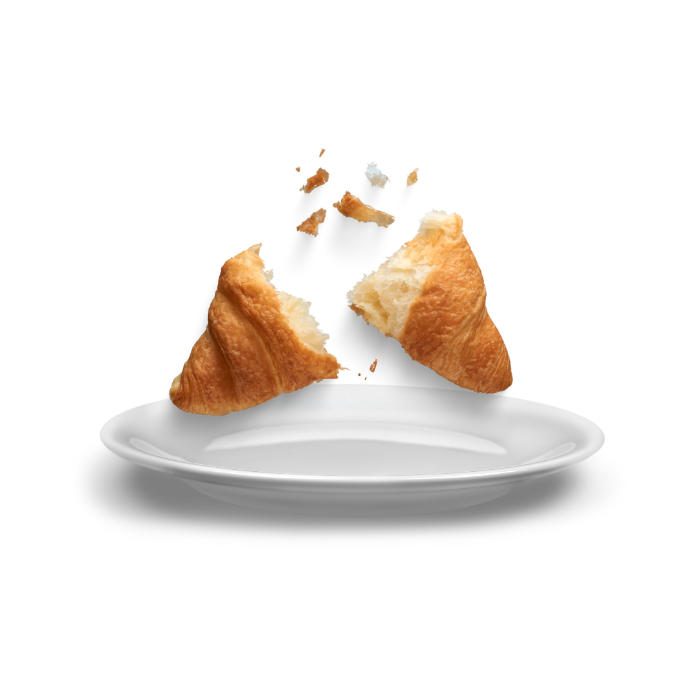

The history of the croissant can be traced back to Austria, where it was originally known as "kipferl." However, it was the French who truly elevated this crescent-shaped pastry to culinary stardom. Legend has it that Marie Antoinette introduced the kipferl to France when she married King Louis XVI in the late 18th century, and it was subsequently refined into the buttery delight we know today. The key to the croissant's exquisite texture lies in the lamination process, where layers of butter are folded into the dough through a series of careful folds and turns. This process creates the pastry's signature flakiness, with each bite offering a satisfying contrast of crispiness on the outside and a tender, airy interior.
